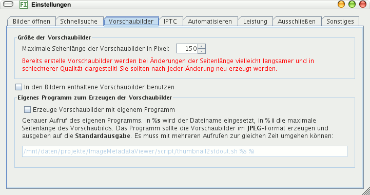

Die Vorschaubilder werden so groß berechnet und angezeigt, wie Sie hier angeben. Haben Sie die Größe geändert, sollten Sie die Bilder neu einlesen lassen, sonst wird die Qualität schlechter, besonders wenn Sie die Vorschaubilder größer einstellen.
Kreuzen Sie hier an, werden die Vorschaubilder geladen, die in den Bildern eingebettet sind. Das geht schneller, als die Vorschaubilder zu berechnen, aber manchmal sind die eingebetteten Vorschaubilder von geringer Qualität.
Die Vorschaubilder werden berechnet mit Imagero. Sie können diese mit einem beliebigen anderen Programm erzeugen lassen, sofern dies JPEGs an die Standardausgabe liefern kann. Ein anderes Programm ist sinnvoll, wenn:
